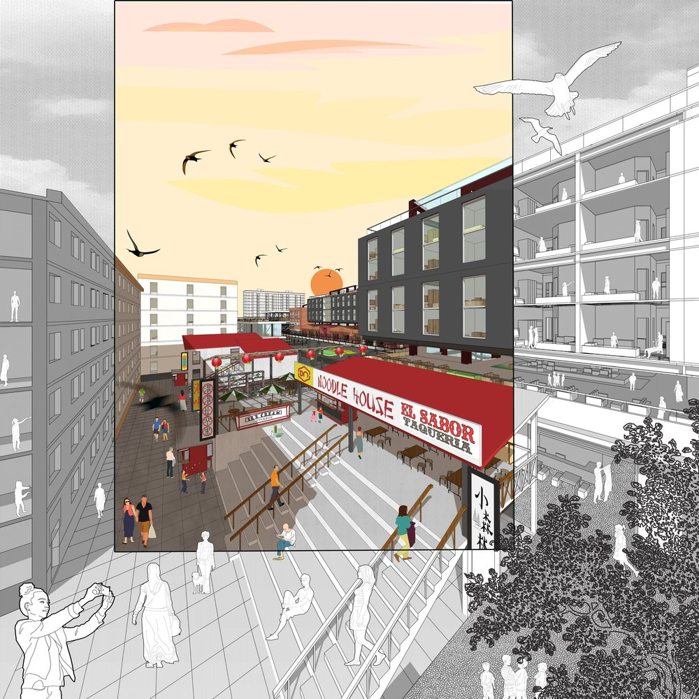
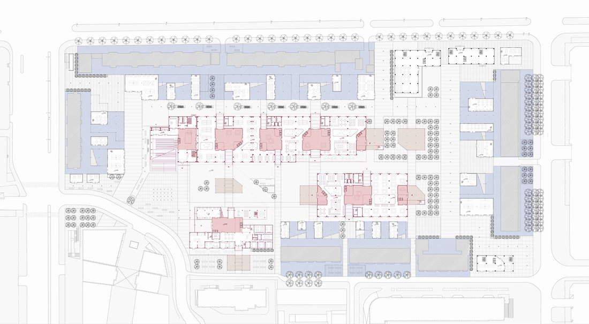
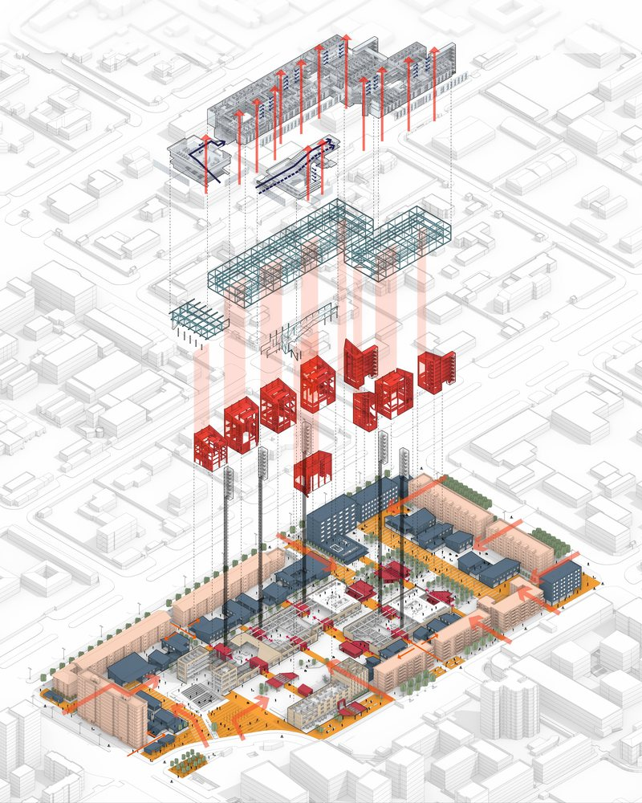
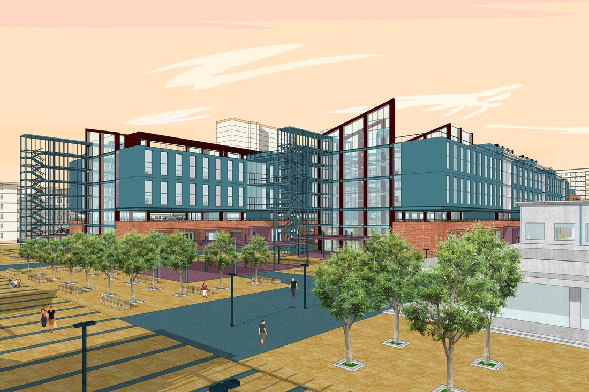
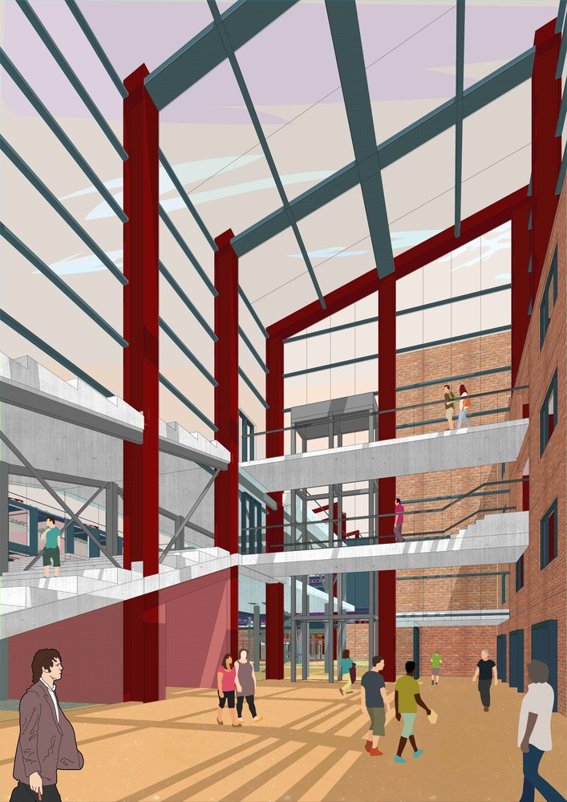
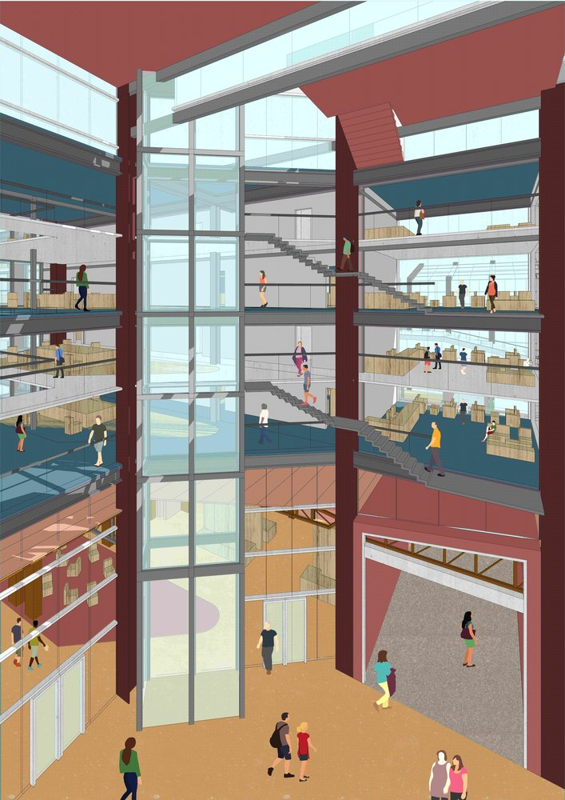
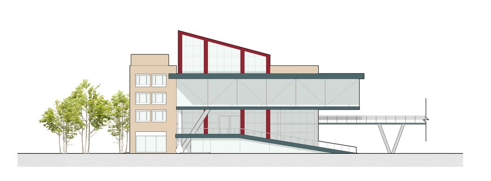

"市集"是日常生活最好的压缩和范本：一张由日常买卖织成的网，回应周围居民最朴素的需要。它亦带来了古老的相遇方式，是一种"熟人社会"的交往模式——交易的同时也是关系的构建。讨价还价的商贩和买家，可能完全不同的两种人物画像，但市集将他们带到一起。
 Sylvie Zhang
Sylvie Zhang
Sylvie Zhang
Sylvie Zhang

三里屯，北京消费主义的代名词，一片被中产化反复打磨过的街区。奢侈品店与写字楼层叠入云，原本属于这里的日常生活，被一点点地吞噬掉。此项目正是位于三里屯最奢华的地段，以此为立足点，将旧公交厂房重新构建成消费主义挤兑下的日常生活。


"市集"是日常生活最好的压缩和范本：一张由日常买卖织成的网，回应周围居民最朴素的需要。它亦带来了古老的相遇方式，是一种"熟人社会"的交往模式——交易的同时也是关系的构建。讨价还价的商贩和买家，可能完全不同的两种人物画像，但市集将他们带到一起。



我将市集逻辑嵌进一个传统商业建筑里，两者各司其职：商业建筑保证地块价值，提供 small office / home office 空间，同时在办公楼中提供"交通核"，将市集的融合概念引入其中；而市集则作为商业建筑与周边现存居民区的缓冲区，向两侧同时提供"下楼即可达"的便利生活。这种融合提出了一个不一样的可能：一种属于城市、但不排斥任何人的空间；一种商业的、但不让人感到疏离的空间。







中产化抹掉的人间烟火，我们在此为它提供空间，让其有再次生发的可能性。


